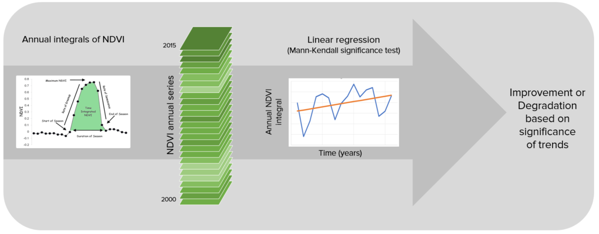

SDG Indicator 15.3.1¶
As part of the “2030 Agenda for Sustainable Development”, Sustainable Development Goal (SDG) 15 is to:
“Protect, restore and promote sustainable use of terrestrial ecosystems, sustainably manage forests, combat desertification, and halt and reverse land degradation and halt biodiversity loss”
Each SDG has specific targets addressing different components, in this case, of life on land. Target 15.3 aims to:
“By 2030, combat desertification, restore degraded land and soil, including land affected by desertification, drought and floods, and strive to achieve a land degradation-neutral world”
Indicators will be used then to assess the progress of each SDG target. In the case of SDG 15.3 the progress towards a land degradation neutral world will be assessed using indicator 15.3.1:
“proportion of land that is degraded over total land area”
As the custodian agency for SDG 15.3, the United Nations Convention to Combat Desertification (UNCCD) has developed a Good Practice Guidance (GPG). providing recommendations on how to calculate SDG Indicator 15.3.1.
This document provides a brief introduction to SDG Indicator 15.3.1 and describes how each indicator is calculated by LDMS.
In order to assess the area degraded, SDG Indicator 15.3.1 uses information from 3 sub-indicators:
Vegetation productivity
Land cover
Soil organic carbon

LDMS allows the user to compute each of these subindicators in a spatially explicit way generating raster maps which are then integrated into a final SDG 15.3.1 indicator map and produces a table result reporting areas potentially improved and degraded for the area of analysis.
Sub-indicators¶
Productivity¶
Land productivity is the biological productive capacity of the land, the source of all the food, fiber and fuel that sustains humans (United Nations Statistical Commission 2016). Net primary productivity (NPP) is the net amount of carbon assimilated after photosynthesis and autotrophic respiration over a given period of time (Clark et al. 2001) and is typically represented in units such as kg/ha/yr. NPP is a variable time consuming and costly to estimate, for that reason, we rely on remotely sensed information to derive indicators of NPP.
One of the most commonly used surrogates of NPP is the Normalized Difference Vegetation Index (NDVI), computed using information from the red and near infrared portions of the electromagnetic spectrum. In LDMS we make use of bi-weekly products from MODIS and AVHRR to compute annual integrals of NDVI (computed as the mean annual NDVI for simplicity of interpretation of results). These annual integrals of NDVI are then used to compute each of the productivity indicators explained below.
Land productivity is assessed in LDMS using three measures of change derived from NDVI time series data: trajectory, performance and state

Productivity Trajectory¶
Trajectory measures the rate of change in primary productivity over time. As indicated in the figure below, LDMS computes a linear regression at the pixel level to identify areas experiencing changes in primary productivity for the period under analysis. A Mann-Kendall non-paremetric significance test is then applied, considering only significant changes those that show a p-value ≤ 0.05. Positive significant trends in NDVI would indicate potential improvement in land condition, and negative significant trends potential degradation.
Correcting for the effects of climate¶
Within a given ecosystem, primary productivity is affected by several factors, such as temperature, and the availability of light, nutrients and water. Of those, water availability is the most variable over time, and can have very significant influences in the amount of plant tissue produced every year. When annual integrals of NDVI are used to perform the trajectory analysis, it is important to interpret the results having historical precipitation information as a context. Otherwise, declining productivity trends could be identified as human caused land degradation, when they are driven by regional patterns of changes in water availability.
LDMS allows the user to perform different types of analysis to separate the climatic causes of the changes in primary productivity, from those which could be a consequence of human land use decisions on the ground. The methods currently supported for climate corrections are:
Residual Trend Analysis (RESTREND): RESTREND uses linear regression models to predict NDVI for a given rainfall amount. Trends in the difference between the predicted NDVI and the observed NDVI (the residual) are interpreted as non-climatically related productivity change. Please refer to the following citation more more details on the method and its limitations: Wessels, K.J.; van den Bergh, F.; Scholes, R.J. Limits to detectability of land degradation by trend analysis of vegetation index data. Remote Sens. Environ. 2012, 125, 10–22.
Rain Use Efficiency (RUE): RUE Is the ratio of annual NPP to annual precipitation. LDMS uses the annual integrals of NDVI as a proxy for annual NPP, and offers the possibility of choosing among different precipitation products to compute RUE. After RUE is computed for each of the years under analysis, a linear regression and a non-parametric significance test is applied to the trend of RUE over time. Positive significant trends in RUE would indicate potential improvement in land condition, and negative significant trends potential degradation. Please refer to the following publication for details on the methods and its limitations: Wessels, K.J.; Prince, S.D.; Malherbe, J.; Small, J.; Frost, P.E.; VanZyl, D. Can human-induced land degradation be distinguished from the effects of rainfall variability? A case study in South Africa. J. Arid Environ. 2007, 68, 271–297.
Water Use Efficiency (WUE): RUE assumes that there is a linear relationship between the amount of water that falls in the form of precipitation in a particular place and the amount of water which will be actually used by the plants. This assumption does not hold true for every system. WUE tries to address this limitation by using total annual evapo-transpiration (ET) instead precipitation. ET is defined as precipitation minus the water lost to surface runoff, recharge to groundwater and changes to soil water storage. The rest of the analysis follows as described for RUE: a linear regression and a non-parametric significance test is applied to the trend of WUE over time. Positive significant trends in WUE would indicate potential improvement in land condition, and negative significant trends potential degradation.
The table below list the datasets available in LDMS to perform NDVI trend analysis over time using the original NDVI data or with climatic corrections:

Productivity State¶
The Productivity State indicator allows for the detection of recent changes in primary productivity as compared to a baseline period. The indicator is computed as follows:
Define the baseline period (historical period to which to compare recent primary productivity).
Define the comparison period (recent years used to compute comparison). It is recommended to use a 3-year to avoid annual fluctuations related to climate.
For each pixel, use the annual integrals of NDVI for the baseline period to compute a frequency distribution. In case the baseline period missed some extreme values in NDVI, add 5% on both extremes of the distribution. That expanded frequency distribution curve is then used to define the cut-off values of the 10 percentile classes.
Compute the mean NDVI for the baseline period, and determine the percentile class it belongs to. Assign to the mean NDVI for the baseline period the number corresponding to that percentile class. Possible values range from 1 (lowest class) to 10 (highest class).
Compute the mean NDVI for the comparison period, and determine the percentile class it belongs to. Assign to the mean NDVI for the comparison period the number corresponding to that percentile class. Possible values range from 1 (lowest class) to 10 (highest class).
Determine the difference in class number between the comparison and the baseline period (comparison minus baseline).
If the difference in class between the baseline and the comparison period is ≤ 2, then that pixel could potentially be degraded. If the difference is ≥ 2, that pixel would indicate a recent improvement in terms of primary productivity. Pixels with small changes are considered stable.

The table below list the datasets available in LDMS to compute the Productivity State indicator:

Productivity Performance¶
The Productivity Performance indicator measures local productivity relative to other similar vegetation types in similar land cover types or bioclimatic regions throughout the study area. LDMS uses the unique combination of soil units (soil taxonomy units using USDA system provided by SoilGrids at 250m resolution) and land cover (full 37 land cover classes provided by ESA CCI at 300m resolution) to define this areas of analysis. The indicator is computed as follows:
Define the analysis period, and use the time series of NDVI to compute mean the NDVI for each pixel.
Define similar ecologically similar units as the unique intersection of land cover and soil type.
For each unit, extract all the mean NDVI values computed in step 1, and create a frequency distribution. From this distribution determine the value which represents the 90th percentile (we don’t recommend using the absolute maximum NDVI value to avoid possible errors due to the presence of outliers). The value representing the 90th percentile will be considered the maximum productivity for that unit.
Compute the ratio of mean NDVI and maximum productivity (in each case compare the mean observed value to the maximum for its corresponding unit).
If observed mean NDVI is lower than 50% than the maximum productivity, that pixel is considered potentially degraded for this indicator.

The table below list the datasets available in LDMS to compute the Productivity Performance indicator:

Combining Productivity Indicators¶
The three productivity sub-indicators are then combined as indicated in the tables below. For SDG 15.3.1 reporting, the 3-class indicator is required, but LDMS also produces a 5-class one which takes advantage of the information provided by State to inform the type of degradation occurring in the area.

Land cover¶
To assess changes in land cover users need land cover maps covering the study area for the baseline and target years. These maps need to be of acceptable accuracy and created in such a way which allows for valid comparisons. LDMS uses ESA CCI land cover maps as the default dataset, but local maps can also be used. The indicator is computed as follows:
Reclassify both land cover maps to the 7 land cover classes needed for reporting to the UNCCD (forest, grassland, cropland, wetland, artificial area, bare land and water).
Perform a land cover transition analysis to identify which pixels remained in the same land cover class, and which ones changed.
Based on your local knowledge of the conditions in the study area and the land degradation processed occurring there, use the table below to identify which transitions correspond to degradation (- sign), improvement (+ sign), or no change in terms of land condition (zero).

LDMS will combine the information from the land cover maps and the table of degradation typologies by land cover transition to compute the land cover sub-indicator.
Soil organic carbon¶
The third sub-indicator for monitoring land degradation as part of the SDG process quantifies changes in soil organic carbon (SOC) over the reporting period. Changes in SOC are particularly difficult to assess for several reasons, some of them being the high spatial variability of soil properties, the time and cost intensiveness of conducting representative soil surveys and the lack of time series data on SOC for most regions of the world. To address some of the limitations, a combined land cover/SOC method is used in LDMS to estimate changes in SOC and identify potentially degraded areas. The indicator is computed as follows:
Determine the SOC reference values. LDMS uses SoilGrids 250m carbon stocks for the first 30 cm of the soil profile as the reference values for calculation (NOTE: SoilGrids uses information from a variety of data sources and ranging from many years to produce this product, therefore assigning a date for calculations purposes could cause inaccuracies in the stock change calculations).
Reclassify the land cover maps to the 7 land cover classes needed for reporting to the UNCCD (forest, grassland, cropland, wetland, artificial area, bare land and water). Ideally annual land cover maps are preferred, but at least land cover maps for the starting and end years are needed.
To estimate the changes in C stocks for the reporting period C conversion coefficients for changes in land use, management and inputs are recommended by the IPCC and the UNCCD. However, spatially explicit information on management and C inputs is not available for most regions. As such, only land use conversion coefficient can be applied for estimating changes in C stocks (using land cover as a proxy for land use). The coefficients used were the result of a literature review performed by the UNCCD and are presented in the table below. Those coefficients represent the proportional in C stocks after 20 years of land cover change.

Changes in SOC are better studied for land cover transitions involving agriculture, and for that reason there is a different set of coefficients for each of the main global climatic regions: Temperate Dry (f = 0.80), Temperate Moist (f = 0.69), Tropical Dry (f = 0.58), Tropical Moist (f = 0.48), and Tropical Montane (f = 0.64).
Compute relative different in SOC between the baseline and the target period, areas which experienced a loss in SOC of 10% of more during the reporting period will be considered potentially degraded, and areas experiencing a gain of 10% or more as potentially improved.

Combining indicators¶
The integration of the three SDG 15.3.1 sub-indicators is done following the one-out all-out rule, this means that if an area was identified as potentially degraded by any of the sub-indicators, then that area will be considered potentially degraded for reporting purposes.